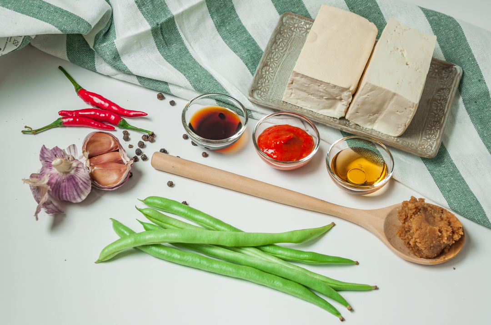

Tofu or bean curd is traditionally made from soybeans. Many people don’t like the taste or texture of tofu much, probably because, on it’s own, it doesn’t have much taste. It also has a springy, chewy texture, but is it really that bad? Not at all. In fact, if we consider tofu to be a blank canvas, we can jazz it up with seasonings and a delicious, delicious umami vibe. For this spicy tofu dish, I chose miso to add a nice saltiness and sriracha sauce to add some heat and tanginess.
If you’re a tofu disbeliever, then let my spicy tofu stir fry change your mind (quick warning: you might want to cook this every night as it’s super delicious).

The key to master cooking tofu is to season and cook it right. Any tofu tastes way better after marinating and frying to crispen it up and coat it with yummy spicy sauce. Tofu is a well known alternative for protein for everybody – especially vegetarians and vegan. You can add some chewy or crispy texture to your meal without adding extra calories. It’s also totally affordable!
##Spicy Tofu Stir Fry Recipe Prep Time:
15 minutes
Cook Time:
10 – 15 minutes
Total Time:
30 minutes
Portions:
2-3 portions
Spicy Tofu Stir Fry You’ll need: 250 g. Firm tofu (1 block) 1 tbsp. White miso paste 1 tbsp. Soy sauce 1 tbsp. Sriracha or any hot sauce ½ tbsp. Agave nectar or any liquid sweetener 3 tbsp. Warm water 3-5 Cloves of garlic 2 Bird’s eye chillies (optional, can also use dried chilli flake) A Splash of sesame oil (optional) 2 ½ tbsp. Vegetable oil 120 g. String beans (handful) Cooked rice (for serving) Preparation: For the stir fry Roughly chop the garlic and chillies. Cut the firm tofu into bite sized pieces. Trim the green beans and cut into bite size pieces around 1 ½ inch long. For the sauce Add miso paste and hot water stir til all the miso paste is dissolved. Add soy sauce, sriracha, agave nectar and stir again to combine, set aside. Let’s start! On high heat add 2 tbsp. of vegetable oil to your wok, then add tofu. Shallow fry until all sides are golden light brown. Remove the tofu and set aside. In the same pan add ½ tbsp. of oil add garlic and chillies, stir quickly until fragrant (around 20 seconds) Add in the green beans. Stir for 2-3 minutes Add the tofu back in. Stir to combine. Add the sauce. Quickly stir til combined and all tofu pieces and green beans are coated – around 2-3 minutes. Turn off the heat add a splash of sesame oil then mix everything together. Serve immediately on top of a fluffy warm rice. Garnish with some sesame or spring onion (optional). Bon Appetit! Tips: If you’d like to avoid oil. You can use the non stick pan to sear the tofu (it might not get crispy, but after it’s coated in the sauce it’ll still be delicious) As well as the stir fry process, you can also use a couple tsp. of water to help cooking the garlic and the veg. If you don’t like it spicy you can remove the seeds from the chillis or even leave them out completely. Please be careful if you use chilli in any stir fry, it’ll make you cough, so make sure you have a ventilator on or have a window open. Make sure you have all the ingredients to hand when cooking as the stir fry cooks VERY fast.